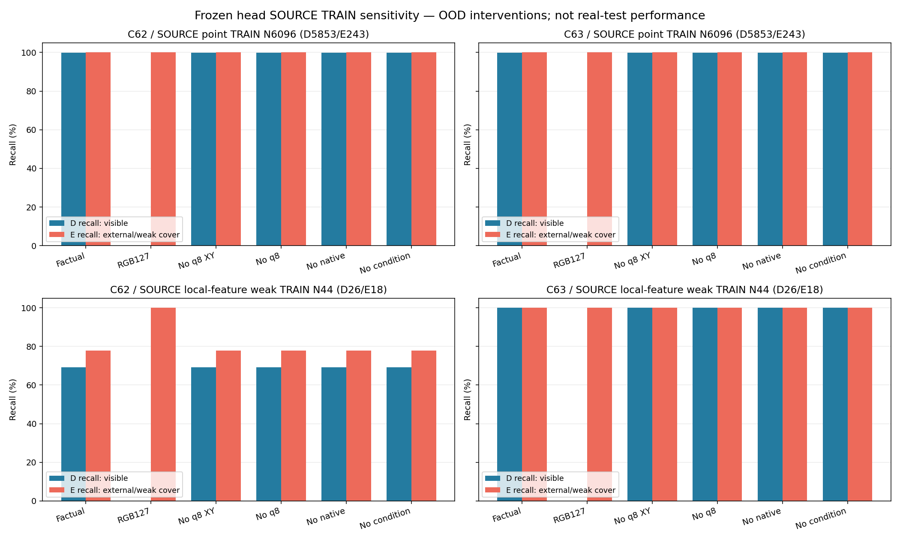
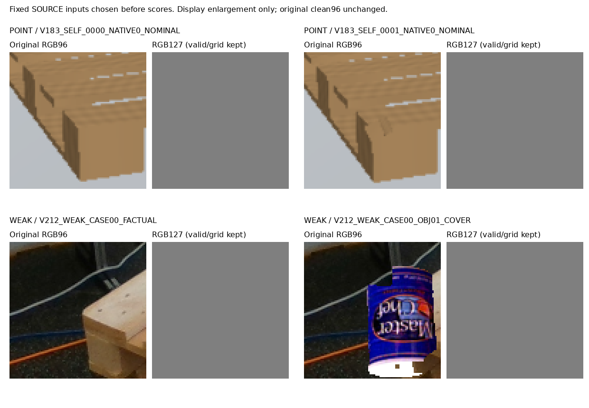

동결 C62/C63의 SOURCE TRAIN 의존도만 검사했다. 모델2개×6조건×(point6096+weak44)=73,680개 scalar를 저장했다. 원 모델 출력을 먼저 재현하고, 가중치·원 q/L/native ID를 유지한 채 RGB 또는 condition branch 입력 일부만 바꿨다. 현재 실사·공개 HOLDOUT·SOURCE HOLDOUT의 새 추론이나 원장·배열 읽기는 없다. 과거 공개 요약에 노출된 이력은 별도 기록했다.
point7040 중 known6096(D5853/E243)만 forward했다. UNKNOWN944와 원 inputU64는 metadata에 유지하고 다시 판정하지 않았다. point는 own-image procedural point 상태이고 weak44는 공개3frame의 visible-feature 덮기 감독이다. 이 집합은 이미 학습에 쓴 자료다. constantRGB/조건제거는 OOD 민감도 검사로, 일반화 성능이나 실사 실패의 단일 원인을 증명하지 않는다. RGB127에서도 validity와 고정 XY grid가 남는다. 보류0은 이진 규칙의 결과이며 confidence가 아니다.

| 모델 | SOURCE 집합 | 조건 | CM D/E행 × D/E/U열 | D recall | E recall | E precision | 원응답과 다른 수 | U |
|---|---|---|---|---|---|---|---|---|
| C62 | POINT | Factual | [[5847, 6, 0], [0, 243, 0]] | 99.90% | 100.00% | 97.59% | 0 | 0 |
| C62 | POINT | RGB127 | [[0, 5853, 0], [0, 243, 0]] | 0.00% | 100.00% | 3.99% | 5847 | 0 |
| C62 | POINT | No q8 XY | [[5846, 7, 0], [0, 243, 0]] | 99.88% | 100.00% | 97.20% | 1 | 0 |
| C62 | POINT | No q8 | [[5845, 8, 0], [0, 243, 0]] | 99.86% | 100.00% | 96.81% | 2 | 0 |
| C62 | POINT | No native | [[5846, 7, 0], [0, 243, 0]] | 99.88% | 100.00% | 97.20% | 1 | 0 |
| C62 | POINT | No condition | [[5845, 8, 0], [0, 243, 0]] | 99.86% | 100.00% | 96.81% | 2 | 0 |
| C62 | WEAK | Factual | [[18, 8, 0], [4, 14, 0]] | 69.23% | 77.78% | 63.64% | 0 | 0 |
| C62 | WEAK | RGB127 | [[0, 26, 0], [0, 18, 0]] | 0.00% | 100.00% | 40.91% | 22 | 0 |
| C62 | WEAK | No q8 XY | [[18, 8, 0], [4, 14, 0]] | 69.23% | 77.78% | 63.64% | 0 | 0 |
| C62 | WEAK | No q8 | [[18, 8, 0], [4, 14, 0]] | 69.23% | 77.78% | 63.64% | 0 | 0 |
| C62 | WEAK | No native | [[18, 8, 0], [4, 14, 0]] | 69.23% | 77.78% | 63.64% | 0 | 0 |
| C62 | WEAK | No condition | [[18, 8, 0], [4, 14, 0]] | 69.23% | 77.78% | 63.64% | 0 | 0 |
| C63 | POINT | Factual | [[5849, 4, 0], [0, 243, 0]] | 99.93% | 100.00% | 98.38% | 0 | 0 |
| C63 | POINT | RGB127 | [[0, 5853, 0], [0, 243, 0]] | 0.00% | 100.00% | 3.99% | 5849 | 0 |
| C63 | POINT | No q8 XY | [[5849, 4, 0], [0, 243, 0]] | 99.93% | 100.00% | 98.38% | 0 | 0 |
| C63 | POINT | No q8 | [[5849, 4, 0], [0, 243, 0]] | 99.93% | 100.00% | 98.38% | 0 | 0 |
| C63 | POINT | No native | [[5849, 4, 0], [0, 243, 0]] | 99.93% | 100.00% | 98.38% | 0 | 0 |
| C63 | POINT | No condition | [[5849, 4, 0], [0, 243, 0]] | 99.93% | 100.00% | 98.38% | 0 | 0 |
| C63 | WEAK | Factual | [[26, 0, 0], [0, 18, 0]] | 100.00% | 100.00% | 100.00% | 0 | 0 |
| C63 | WEAK | RGB127 | [[0, 26, 0], [0, 18, 0]] | 0.00% | 100.00% | 40.91% | 26 | 0 |
| C63 | WEAK | No q8 XY | [[26, 0, 0], [0, 18, 0]] | 100.00% | 100.00% | 100.00% | 0 | 0 |
| C63 | WEAK | No q8 | [[26, 0, 0], [0, 18, 0]] | 100.00% | 100.00% | 100.00% | 0 | 0 |
| C63 | WEAK | No native | [[26, 0, 0], [0, 18, 0]] | 100.00% | 100.00% | 100.00% | 0 | 0 |
| C63 | WEAK | No condition | [[26, 0, 0], [0, 18, 0]] | 100.00% | 100.00% | 100.00% | 0 | 0 |
